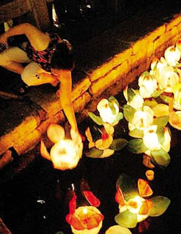

中元节又称“鬼节”或“孟兰盆会”。“中元”之名起于北魏，有些地方俗称“鬼节”、“施孤”，又称亡人节、七月半。根据古书记载：“道经以正月十五日为上元，七月十五日为中元，十月十五日为下元。”
“中元节”，桂东人称之为“鬼节”，俗称“七月半”(有些地区为十三或十四)。在桂东的习俗中，“七月半”是清明节之后的另一重要的祭祀时节。其最大的差别就在于：清明节往往聚族而祭，“七月半”大多是一家之祭。到了晚上，家家户户还要在自己家门口焚香，把香插在地上，越多越好，象征着五谷丰登，叫做“布田”。有些地方有放水灯的活动。所谓水灯，就是一块小木板上扎一盏灯，大多数都用彩纸做成荷花状，叫做“水旱灯”。人们认为，中元节是鬼节，也应该张灯，为鬼庆祝节日。不过，传统观念中人鬼有别，人为阳，鬼为阴；陆为阳，水为阴。所以，上元张灯是在陆地，中元张灯是在水里。
在中国的二十四节气中，清明在惊蛰之后、谷雨之前。这时在地下蛰伏过冬的虫蛇开始惊醒复苏，花草树木开始发芽生长，雨季即将来临。在这个时节去扫一次墓，驱赶虫蛇，清除杂草，疏通排水沟渠，以免先人阴宅受到惊扰和水浸，这是清明扫墓的主要目的。
祭祖节在阴历七月十五日，所以简称为“七月半”祭祖。那时盛夏已经过去，秋凉刚刚开始。祭拜的仪式是在傍晚时分举行。平常日子要对先人祭拜，一般都不动先人的牌位。到“七月半”祭祖时，则要把先人的牌位一位一位请出来，恭恭敬敬地放到专门做祭拜用的供桌上，再在每位先人的牌位前插上香，供上食品。有先人画像的，也要请出挂起来。祭拜时，依照辈份和长幼次序，给每位先人磕头，默默祷告，向先人汇报并请先人审视自己这一年的言行，保佑自己平安幸福。
江南水乡的“七月半”祭祖活动中的一个特点是吃毛豆。那时毛豆刚熟，用盐水煮上一大盆，祭奠完了以后，就着初凉的秋风和明亮的月色，一边吃毛豆，一边聊天，正是：
秋风送爽心适闲，更有新烹毛豆鲜。
父辈颇能知故事，一壶老酒话当年。
我国的鬼节文化源远流长，我以为鬼节祭祀，不能简单看成是迷信，实际上是民间的一种宗教活动。“鬼节”是因传统美德的孝心而起的。一个民族的习俗和传统，都是某种文化和观念的反映。中国过去的上坟扫墓，过年烧纸和“七月半”祭祖，其基础都是道教关于阴间与阳世的观念，这在华夏这片土地上曾经传播延续了上千年。只是到了近代，人类文明从地域性向全球性过渡，在不同的地域性文明之间发生接触、碰撞和消融，情况才起了变化。因为血脉的召唤，感情的延伸，以及对自己未来的提醒，都赋予了鬼节丰富的人文内涵。即使年代不同了，烧去的礼物也不同了，但永远捎不完活着的人对故去亲人无尽的绵绵哀思和深深的怀念。即使亲人活着的时候，有不孝顺或照顾不周的情况，在上坟烧纸的时候，念叨几句，也能求得心理的一种平衡。也许随着时代的发展和人们文化程度的提高，人们会找到更好的纪念先人的办法，但对先人的祭奠和追思，却是什么时代都不可缺少的。